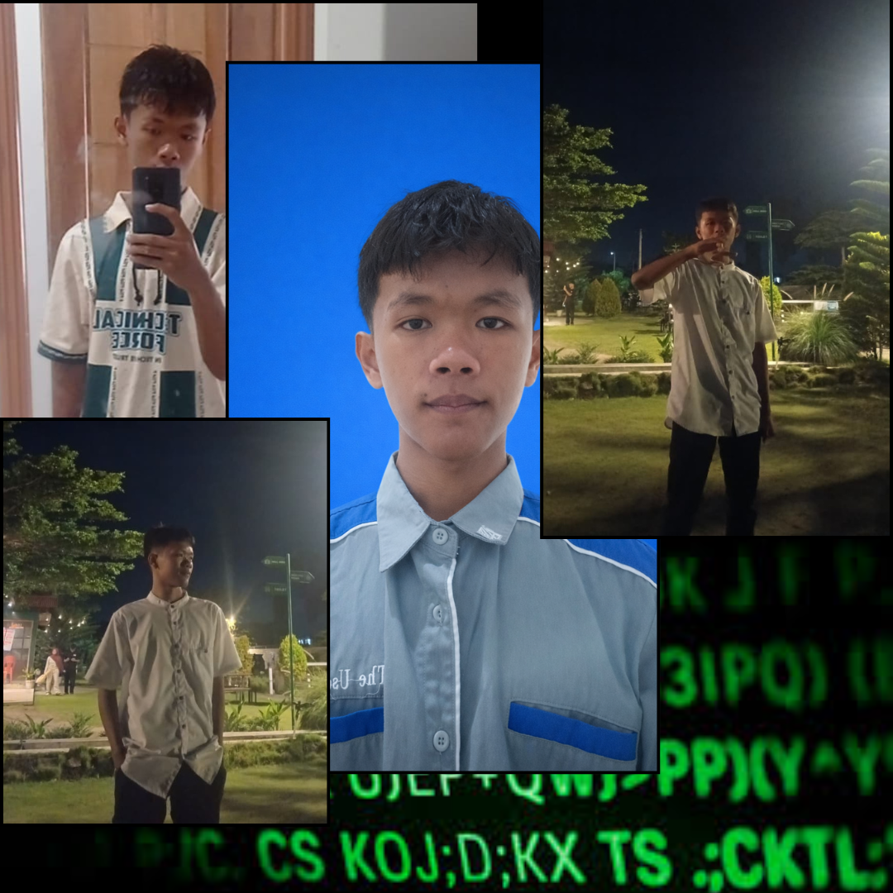

NODE: SALAM_ID // SMKAKENGO
SECURE_CON
SYSTEM WEBSITE_1
I SEE YOU LOOKING.
Sheng' M. Choirul Rozikin
NAME: M. Choirul Rozikin
ALIAS: MchyOzik
ROLE: IT Network System Administrator & Cloud Computing
NODE: SMKN 1 Nglegok (TKJ)
Seorang antusias teknologi di bidang teknik komputer dan jaringan (TKJ). Fokus pada administrasi jaringan, manajemen server, dan cloud computing.
